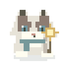
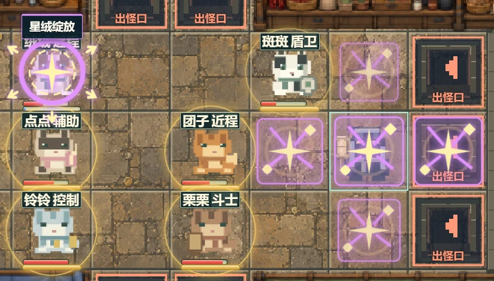
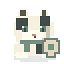
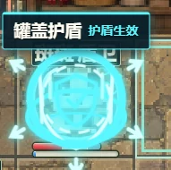
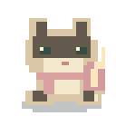
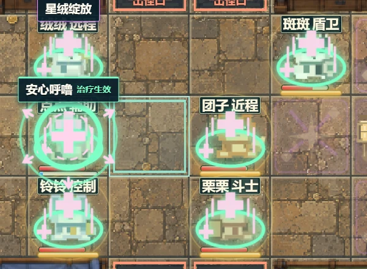

绒绒 / Rongrong星绒绽放 — Star BurstCross-shaped area attack

Stray Kitty is a pixel-art adventure that combines tabletop RPG-inspired map exploration and dice-driven encounters with real-time tactical combat and home building.
Our story begins with a very ordinary cat problem: an irresistible smell of tuna. One rainy adventure later, Miaomiao is lost. As she explores unfamiliar places and helps other cats along the way, her search for home gradually becomes a journey to build one together.
For cat lovers and tabletop adventurers alike, it's a world of curiosity, chance, and unexpected friendships.
Two separate floor connections, linked by actual street movement. The footage is a single continuous take.







→ / Space next · ← previous
Esc finish motion · Home first · End last